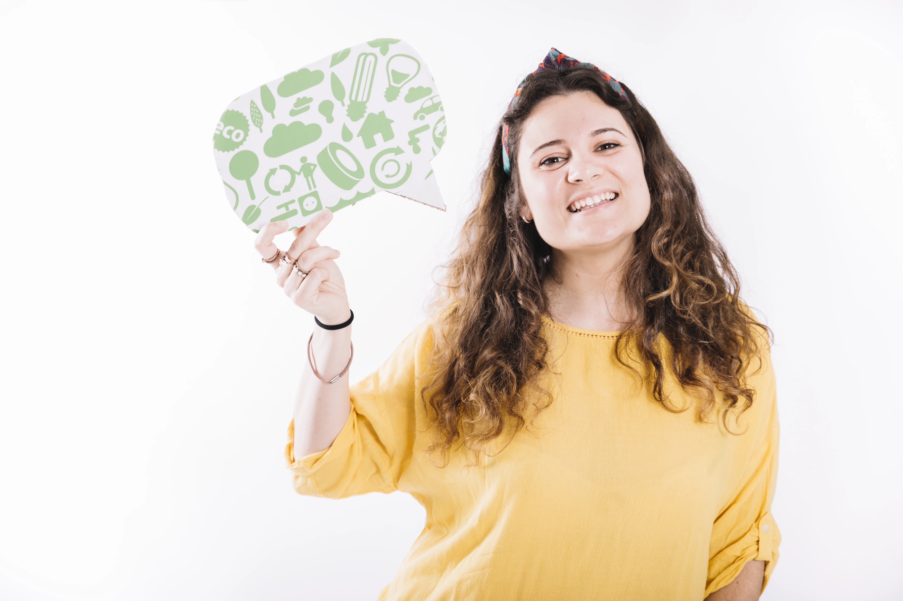
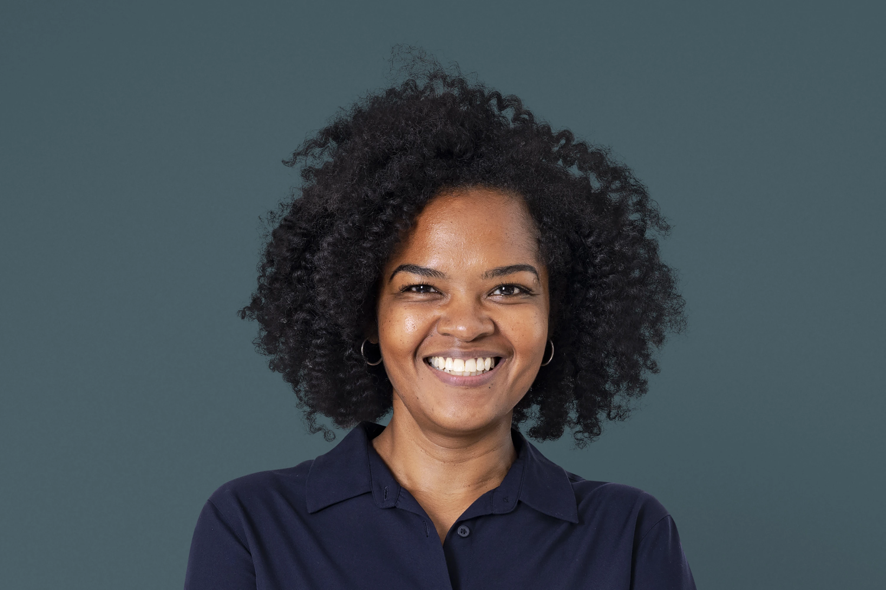

-
MARIA RODRIGUEZ
Taller de economía circular y residuo cero
Encuentra soluciones innovadoras y colaboradoras para la gestión de los residuos de tu urbanización.
02/05/2025 – 18:00
-

MARIONA DIAZ
Economía circular. Nuevo modelo económico de producción y consumo
¿Cómo a través de la economía circular las empresas pueden crear valor mediante la reutilización y el reciclaje de productos?
05/05/2025 – 17:30
-
ONA CASTELLS
Ecodiseño y ecoinnovación de materiales de construcción
La sostenibilidad en los materiales de construcción es clave para la preservación del medio ambiente. Para ello, es vital impulsar el ecodiseño y ecoinnovación en el diseño, y en la fabricación de materiales.
10/06/2025 – 16:30
-

ISABEL JIMENEZ
Economía circular. Nuevo modelo económico de producción y consumo
Nuestra generación más joven es el futuro de nuestro planeta. Talleres, actividades didácticas, manualidades… infinidad de actividades para que los más pequeños aprendan desde una temprana edad la importancia de cuidar el planeta en el que vivimos.
13/06/2025 – 17:00
-
OSCAR FERNANDEZ
Comida y economía circular
Cambiar nuestro sistema alimentario es una de las medidas más impactantes que podemos tomar para abordar el cambio climático, crear ciudades saludables y reconstruir la biodiversidad.
26/06/2025 – 15:00
-
EMMA GUTIERREZ
Economía circular de los residuos
La economía circular es el nuevo modelo de producción y consumo que garantiza un crecimiento sostenible en el tiempo, optimizando los recursos, reduciendo el consumo de materias primas y aprovechando los residuos.
26/06/2025 – 17:00